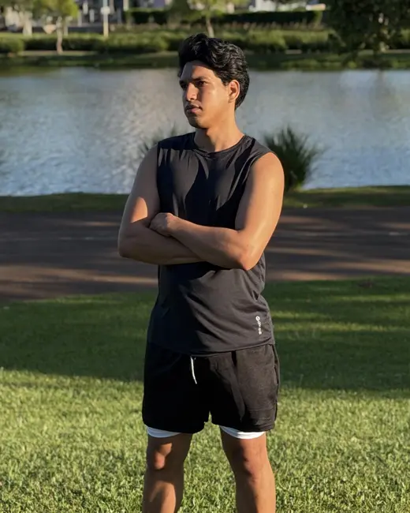

Construo sites e sistemas web. Esta é a minha trajetória e os projetos que já desenvolvi sob a marca MV NEXUS.

Sou desenvolvedor web, formado em Licenciatura em Informática pela UTFPR e pós-graduado em Inteligência Artificial pela Faculdade Iguaçu. Gosto de transformar problemas reais em sistemas simples de usar, do design à publicação, sempre começando pelo celular. MV NEXUS é a marca com a qual assino meus projetos.
Toque em um projeto para ver o problema que resolve, as funcionalidades e as tecnologias.
Stack usada nos projetos acima.
Faculdade Iguaçu · Concluída
UTFPR · Concluída
Criação de sites, landing pages e sistemas web, do design à publicação, para negócios locais e projetos próprios.